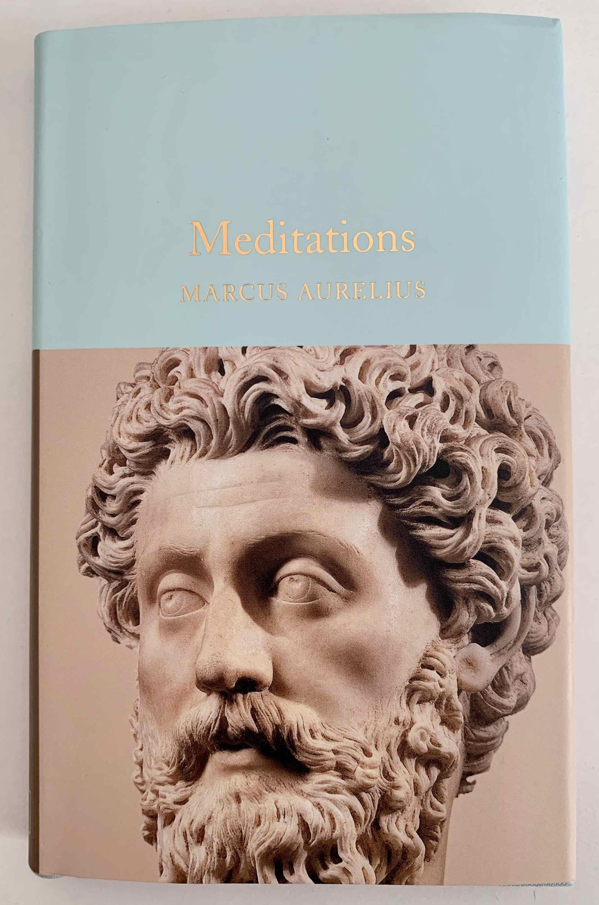

January 24, 2021

"(...) Say to yourself in the early morning: I shall meet today inquisitive, ungrateful, violent, treacherous, envious, uncharitable men. All these things have come upon them through ignorance of real good and ill. But I, because I have seen that the nature of good is the right, and of ill the wrong, and that the nature of the man himself who does wrong is akin to my own (not of the same blood and seed, but partaking with me in mind, that is in a portion of divinity), I can neither be harmed by any of them, for no man will involve me in wrong, nor can I be angry with my kinsman or hate him; for we have come into the world to work together, like feet, like hands, like eyelids, like the rows of upper and lower teeth. To work against one another therefore is to oppose Nature, and to be vexed with another or to turn away from him is to tend to antagonism." - Marcus Aurelius
Marcus Aurelius (121 - 180 AD) was a Roman emperor from 161 to 180, and also a stoic philosopher. He inherited the empire from his uncle Antonius Pius after the later died. Marcus was educated at home, as most aristocratic children those days. He was taught by masters from different areas, and learned oratory from two of the most esteemed orators of their time, Herodes Atticus and Caninius Celer.
"Meditations" is a compilation of several excerpts from Marcus Aurelius diary. The book as it came to be, is further divided in 12 smaller books, which represent different periods of his life. The collection is neither in chronological order nor was intended to be read by anyone but himself.
Marcus' writing style is very distinct from most modern philosophy books. The text is straight to the point, Marcus does not find use in any jargon or technically, his writing is nothing but clear and concise.
Aurelius' perspective of time is what gives rise to most of his reasoning. Here is my interpretation of his ideas: a man can live for several decades, but they will eventually die. Just as many did before him, and as many will do for several years after his death. If a man is glorious in his life, and if he is remembered by many that come after him, these men who remember his legacy will also eventually die. With their death, his memory also vanishes away. So why worry about glory? Why worry about legacies? Why fight against Nature? Won't Nature get back what is hers in due time? If that is so, a man should be grateful for the time Nature has given to him, and to his existence. Instead of preoccupying about things that are out of his control, he should direct his focus towards being a good man, and keeping his ethics to the highest standard.